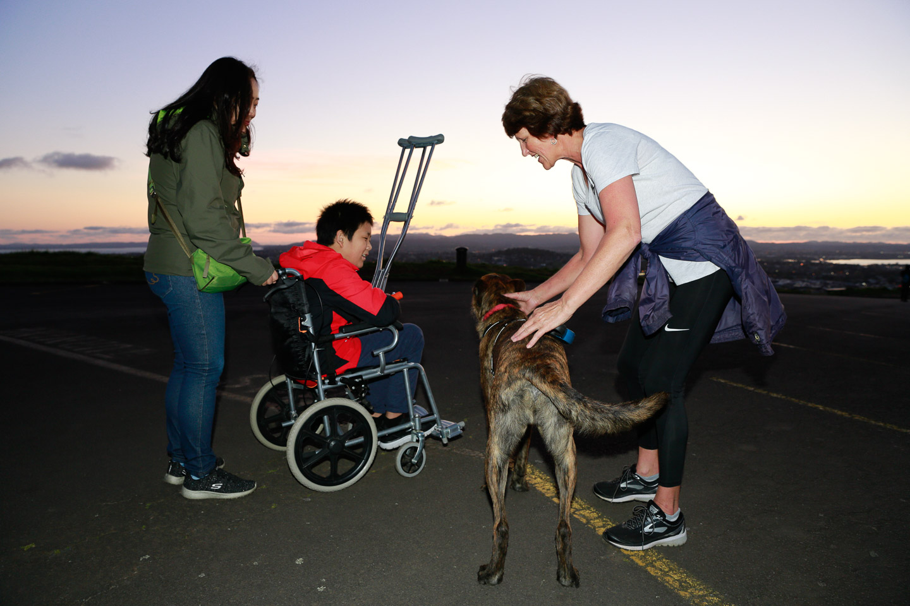
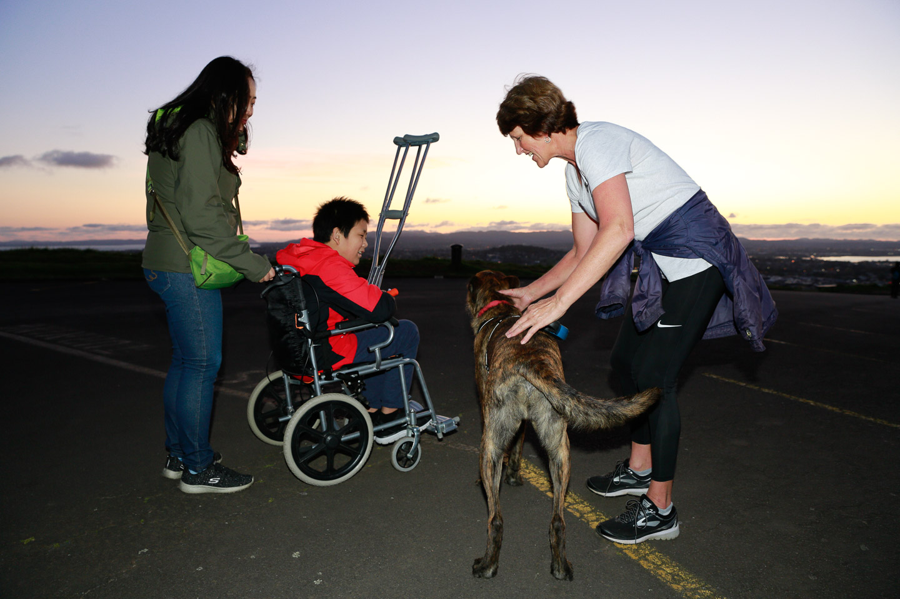

My Story: New Zealand Grit

From a Break to a Breakthrough
On July 15, 2018, I broke my right tibia and fibula on the court. I cried in the ambulance: “I’m sorry, Mom. We can’t go to New Zealand anymore.” Four hours later, I woke up with an external fixator on my leg. I thought sports—and the life I loved—were over. But sometimes, the road back begins the very moment you think it ends.
The Fall
As I was dribbling and running, someone much older hit me. My right leg snapped—tibia and fibula fractured. The ambulance siren blurred with my thoughts. In tears, I apologized to my mom about our planned trip.
“I’m sorry, Mom. We can’t go to New Zealand anymore.”
Surgery took four hours. When I woke, metal framed my leg. For weeks, I dreamt I was back on the court, running, getting knocked down—breaking my leg again. Each time, the same fear pulled me awake.
The Turning Point
On September 29, the external fixator came off. Blood spurted from the screw holes—raw proof of how far I still had to go. Then Mom said: “On October 4, we’re going to New Zealand.”
“Impossible,” I thought. “On crutches? In a wheelchair? How could that be?”
And yet, on October 4, 2018, I boarded a flight to Auckland—on crutches. That decision didn’t just move me across 10,000 kilometers; it moved something inside me back into motion.

On Crutches, I Went Anyway
- I climbed Mount Eden.
- I visited Hobbiton and stood at Bilbo Baggins’s door.
- I watched the haka in Rotorua.
- I saw the vast Milky Way over Lake Tekapo.
- In Queenstown, at Kawarau Bridge Bungy, I promised I’d be back.
- I reached Invercargill—the southernmost city I’d ever been.
The nightmare that haunted me quietly faded. The world felt big again. And I felt ready to grow into it.
 

New Zealand—where a journey became a turning point.
Back to the Court
I returned to the soccer field. I was still the key center on the basketball court. I fell—then stood up, again and again. I grew stronger. Braver. Not defined by my injury, but by the strength I found through it.
I am ready to face every challenge ahead.

Thank you for reading.
This is not a story about loss. It’s a story about finding resolve, inch by inch, step by step—sometimes on crutches— and choosing to move forward anyway.